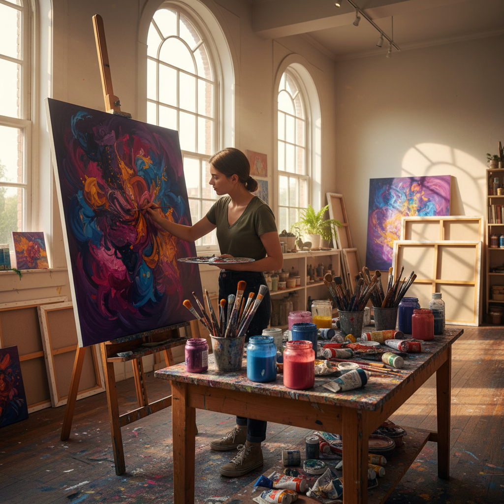
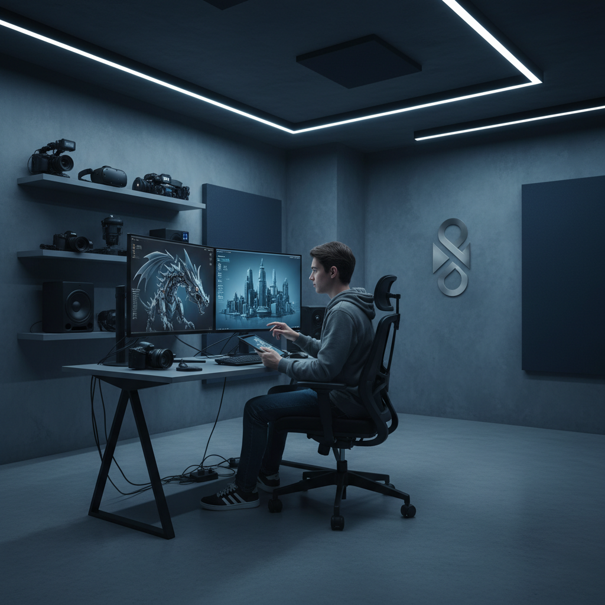
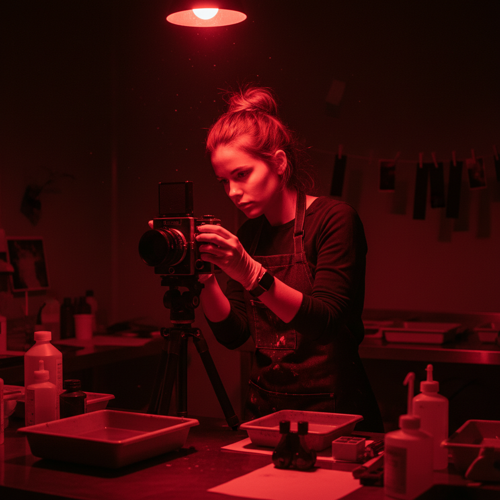

Die Zukunft der Kunst beginnt in Berlin. Entfalte deine einzigartige Stimme.
Wir sind die Kunsthochschule Müller: Ein interdisziplinärer Raum, in dem klassisches Handwerk auf digitale Avantgarde trifft. Verlasse die starren Pfade traditioneller Lehre und experimentiere an modern ausgestatteten Ateliers mit Malerei, VR und Motion Design. Hier entwickelst du nicht nur Technik, sondern deine einzigartige künstlerische DNA – begleitet von Dozenten, die selbst aktiv in der Kreativszene Berlins wirken. Starte jetzt deine Karriere in der freien oder angewandten Kunst.
- Interdisziplinäre Studiengänge (BA/MA) in Freier & Angewandter Kunst.
- Modernste Ateliers und Labore (VR, Fotografie, Digitales Design).
- Individuelle Portfolio-Betreuung durch aktive Künstler:innen.
- Starke Vernetzung in die Berliner Galerien- und Kulturszene.
- Künstler:innen-Residenzen und internationale Gastvorträge.
Die Kunsthochschule Müller: Wo Freiheit auf Fundament trifft.
Kunst ist kein starrer Lehrplan, sondern ständige Bewegung. Unser Kernversprechen ist die Freiheit, die du brauchst, um dich neu zu erfinden. Wir bieten dir die Infrastruktur und die Mentoren, um deine Vision von der ersten Skizze zur großen Ausstellung zu bringen. Bei uns lernst du, die Regeln zu beherrschen, um sie bewusst und reflektiert zu brechen. Wir fördern den Mut zum Experiment und die Disziplin zur Exzellenz. Unser offenes Umfeld in Berlin ist der perfekte Nährboden für deine kreative Entwicklung.

Interdisziplinäre Freiheit
Wir denken nicht in starren Fächern, sondern in Projekten. Kombiniere Malerei mit 3D-Druck, Grafik mit VR-Installation. So bleibst du relevant in einer sich ständig wandelnden Kreativwelt.

Praxisnahe Exzellenz
Kooperationen mit Berliner Galerien, Museen und Kulturinstitutionen garantieren, dass deine Arbeiten gesehen werden und du frühzeitig Kontakte in die professionelle Szene knüpfst.

Individuelle Begleitung
Kleine Gruppen und intensive Portfolio-Betreuung stellen sicher, dass du deinen eigenen Stil entwickelst – abseits von Trends. Deine kreative Stimme steht im Mittelpunkt.
Unsere Studiengänge und Intensivkurse
Ob du eine fundierte akademische Ausbildung suchst oder deine Fähigkeiten in einem spezifischen Bereich vertiefen möchtest – wir bieten den passenden Rahmen für deine Ambitionen.
Bachelor- und Masterstudiengänge
Fundierte Ausbildung in Freier und Angewandter Kunst.
Unsere akkreditierten Programme (BA/MA) bieten eine tiefgehende Auseinandersetzung mit künstlerischer Theorie, Geschichte und Praxis. Du wählst deinen Schwerpunkt – von Malerei über Bildhauerei bis zu Digitalen Medien – und arbeitest interdisziplinär an semesterübergreifenden Projekten. Der Fokus liegt auf der Entwicklung einer eigenständigen künstlerischen Position, die dich auf eine professionelle Karriere vorbereitet.
Workshops und Intensivkurse
Spezialwissen in Malerei, Grafik, Fotografie und Digitale Medien.
Ideal für Berufstätige, Quereinsteiger oder zur Vorbereitung auf die Eignungsprüfung. Unsere Intensivkurse bieten konzentriertes Wissen in spezifischen Disziplinen wie experimenteller Fotografie, Motion Design oder fortgeschrittener Grafik. Die Kurse sind zeitlich flexibel gestaltet, damit du deine Weiterbildung optimal in deinen Alltag integrieren kannst.
Künstlerische Beratung & Portfolio-Review
Individuelle Begleitung auf dem Weg zur Bewerbung.
Wir bieten eine persönliche Beratung und detaillierte Überprüfung deines Portfolios, bevor du dich bewirbst. Unsere Dozenten geben dir konstruktives Feedback zu Konzept, Technik und Präsentation, damit deine Bewerbung optimal vorbereitet ist. Dies ist oft der entscheidende Schritt zum Studienplatz.
Zusätzliche Möglichkeiten
- Ausstellungsmöglichkeiten in schuleigenen Galerien.
- Teilnahme an internationalen Wettbewerben und Austauschprogrammen.
- Unterstützung bei Karriereplanung und Selbstständigkeit.
- Zugang zu Bibliothek, Materialarchiv und Mediathek.
Dein Labor für Kreativität: Modernste Ateliers in Berlin
Die Qualität deiner Arbeit hängt maßgeblich von den Werkzeugen ab, die dir zur Verfügung stehen. Wir investieren kontinuierlich in unsere Räumlichkeiten, um dir ein Umfeld zu bieten, das keine technischen Wünsche offen lässt. Von der klassischen Holz- und Metallwerkstatt (geleitet von Paul Winter) bis zum hochmodernen Digital-Lab für VR- und 3D-Anwendungen – hier kannst du experimentieren, ohne Kompromisse bei der Umsetzung eingehen zu müssen.
Digital-Lab & VR-Studio
Arbeitsplätze mit leistungsstarker Hardware für 3D-Animation, Video-Editing und immersive VR-Installationen.
Fotografie-Werkstatt
Voll ausgestattete Dunkelkammer für analoge Prozesse sowie professionelle Studios für digitale Porträt- und Produktfotografie.
Klassische Ateliers
Großzügige, lichtdurchflutete Räume für Malerei, Grafik und Zeichnung, die zum freien Experimentieren einladen.
Holz- und Metallwerkstatt
Sichere und professionelle Werkstätten für skulpturale Arbeiten, Modellbau und die technische Realisierung komplexer Installationen.
Vom ersten Gedanken zum Studienplatz in 4 Schritten
-
1. Beratung & Vorbereitung
Nimm an einer unserer Informationsveranstaltungen teil oder buche eine individuelle Sprechstunde mit Sabine Mertens. Wir klären alle Fragen zu Studiengang, Zulassungsvoraussetzungen und helfen dir, dein Portfolio optimal zu strukturieren. Dieser Schritt ist entscheidend für den Erfolg.
-
2. Portfolio-Einreichung
Reiche dein digitales Portfolio fristgerecht über unser Online-Portal ein. Achte darauf, dass deine Arbeiten deine Bandbreite, dein Konzeptverständnis und deine technische Kompetenz widerspiegeln. Wir suchen nach Potenzial und Persönlichkeit, nicht nur nach Perfektion.
-
3. Eignungsprüfung & Gespräch
Nach positiver Prüfung der Unterlagen laden wir dich zu einem persönlichen Gespräch und einer praktischen Aufgabe ein. Hier lernst du das Dozenten-Team kennen (z.B. Lara König oder Jonas Brecht), präsentierst deine Vision und zeigst uns, was dich antreibt.
-
4. Studienstart in Berlin
Nach erfolgreicher Zulassung erhältst du alle Unterlagen für deine Immatrikulation. Du startest in einem kreativen Umfeld in Berlin, knüpfst erste Kontakte und beginnst, deine künstlerische Laufbahn aktiv zu gestalten. Wir freuen uns auf deine Ideen!
Kreativität in Aktion: Einblicke in unsere Projekte
Unsere Studierenden arbeiten an der Schnittstelle von Gesellschaft, Technologie und Ästhetik. Hier eine Auswahl aktueller Arbeiten, die in unseren Ateliers und Laboren entstanden sind.
„Die Freiheit, die ich hier habe, ist unschlagbar. Ich konnte ein VR-Installationsprojekt realisieren, das klassische Malerei mit Motion Tracking verband. Die Unterstützung durch Jonas Brecht im Digital-Lab war essenziell. Es geht nicht nur um Noten, sondern darum, Grenzen auszutesten und wirklich etwas Neues zu schaffen.“
„Die intensive Betreuung von Lara König hat meinen Stil in der Malerei revolutioniert. Ich habe gelernt, Farblehre nicht nur anzuwenden, sondern emotional zu verstehen. Am wichtigsten war aber die Vernetzung: Durch die schuleigenen Ausstellungen habe ich meine ersten Aufträge und Galeriekontakte in Berlin gewonnen.“
„Ich wollte meine dokumentarischen Fähigkeiten schärfen. Amira Feldhaus hat uns in der Fotowerkstatt nicht nur die Technik (analog/digital) vermittelt, sondern auch gelehrt, wie man eine kohärente Serie entwickelt. Die Werkstätten sind top ausgestattet – man fühlt sich sofort professionell unterstützt.“
Das Fundament deiner Ausbildung: Unser Dozenten-Team
Unsere Dozenten sind keine Theoretiker, sondern aktive Künstler:innen, Gestalter:innen und Techniker:innen, die mitten im Berliner Kunstbetrieb stehen. Sie bringen aktuelles Wissen, ein breites Netzwerk und die Leidenschaft mit, dich individuell zu fordern und zu fördern. Wir sind stolz auf ein Team, das sowohl das klassische Handwerk ehrt als auch die digitale Zukunft umarmt.
Lara König
Professorin für Freie Malerei
Lara König verbindet klassisches Handwerk mit experimentellen Techniken. Ihre Arbeiten wurden europaweit ausgestellt, und sie legt im Unterricht besonderen Wert auf individuelle Ausdrucksformen und farbtheoretische Grundlagen. Sie inspiriert Studierende, über die Leinwand hinaus zu denken.
Jonas Brecht
Dozent für Digitale Medien & Animation
Jonas Brecht arbeitet an der Schnittstelle von Kunst und Technologie. Mit Erfahrung in 3D-Animation, VR-Installationen und Motion Design begleitet er Studierende bei medienübergreifenden Projekten und lehrt den Umgang mit den neuesten digitalen Werkzeugen.
Amira Feldhaus
Leiterin der Fotografie-Werkstatt
Als spezialisierte Fotokünstlerin mit dokumentarischem Schwerpunkt unterstützt Amira Feldhaus Studierende im Umgang mit analoger und digitaler Fototechnik sowie in Konzept- und Serienentwicklung. Sie schärft den Blick für die visuelle Erzählung.
Paul Winter
Technischer Werkstattleiter (Holz/Metall)
Paul Winter verfügt über langjährige Erfahrung im Modellbau und in skulpturalen Prozessen. Er sorgt für sichere Abläufe in den Werkstätten und hilft bei der technischen Umsetzung komplexer Projekte – der Garant für die physische Realisation deiner Ideen.
Sabine Mertens
Sekretariat & Studierendenservice
Sabine Mertens ist zentrale Ansprechpartnerin für organisatorische Anliegen, Bewerbungen und interne Abläufe. Mit ihrer strukturierten Arbeitsweise sorgt sie für reibungslose Kommunikation zwischen Studierenden, Lehrenden und Verwaltung – deine erste Anlaufstelle für alle Fragen.
Häufige Fragen zur Bewerbung und zum Studium
Welche Voraussetzungen brauche ich für die Bewerbung?
Für die Bachelorstudiengänge ist in der Regel die Allgemeine Hochschulreife oder eine als gleichwertig anerkannte Qualifikation erforderlich. Entscheidend ist jedoch das Bestehen der Eignungsprüfung und die Qualität deines Portfolios. Für Masterstudiengänge ist ein abgeschlossenes Studium in einem relevanten Fachbereich notwendig. Wir laden dich ein, unsere Sprechstunden zu nutzen, um deine individuelle Situation zu klären.
Wie wichtig ist mein Portfolio im Bewerbungsprozess?
Das Portfolio ist der wichtigste Teil deiner Bewerbung. Es sollte deine bisherigen Arbeiten, dein konzeptionelles Denken und dein Potenzial zeigen. Wir erwarten keine perfekte Technik, sondern eine erkennbare, eigenständige kreative Haltung. Nutze unsere Portfolio-Beratung, um sicherzustellen, dass deine Auswahl optimal präsentiert wird.
Welche Kosten fallen für das Studium an?
Als private Kunsthochschule erheben wir Studiengebühren, die in die moderne Ausstattung, die kleinen Kursgrößen und die intensive Betreuung fließen. Die genauen Gebühren variieren je nach Studiengang (BA/MA) oder Workshop. Wir bieten transparente Zahlungsmodelle und informieren dich gerne detailliert in einem persönlichen Gespräch über Finanzierungsmöglichkeiten.
Ist die Hochschule staatlich anerkannt?
Ja, unsere Bachelor- und Masterstudiengänge sind staatlich anerkannt und akkreditiert, was die Qualität unserer Lehre garantiert. Die Abschlüsse sind national und international gleichwertig. Dies ermöglicht dir, nach dem Studium direkt in den Beruf einzusteigen oder ein weiterführendes Masterstudium zu beginnen.
Kann ich während des Studiums auch im Ausland studieren?
Absolut. Wir pflegen Kooperationen mit internationalen Kunsthochschulen und bieten Austauschprogramme an. Wir ermutigen unsere Studierenden, Zeit im Ausland zu verbringen, um neue Perspektiven zu gewinnen und ihr internationales Netzwerk aufzubauen. Sabine Mertens im Studierendenservice hilft dir gerne bei der Organisation deines Auslandssemesters.
Wie sieht die Vernetzung in die Berliner Kunstszene aus?
Durch unsere Dozenten, die selbst aktiv ausstellen, und unsere festen Kooperationen mit Galerien und Kulturinstitutionen in Berlin sind unsere Studierenden eng mit der lokalen Szene verbunden. Wir organisieren regelmäßige Exkursionen, Gastvorträge und bieten dir die Möglichkeit, deine Arbeiten in schuleigenen und externen Galerien auszustellen.
Welche digitalen Medien werden konkret unterrichtet?
Der Bereich Digitale Medien ist breit gefächert und umfasst Kurse in 3D-Modellierung, Animation, Motion Design, interaktive Installationen (VR/AR) und digitale Bildbearbeitung. Jonas Brecht und sein Team stellen sicher, dass du nicht nur die Software bedienen, sondern die Technologien als künstlerisches Ausdrucksmittel nutzen kannst.
Bereit für den nächsten Schritt? Wir sind für dich da.
Der Weg zu einer künstlerischen Karriere beginnt mit einem Gespräch. Egal, ob du Fragen zur Bewerbung hast, die Ateliers besichtigen möchtest oder eine individuelle Portfolio-Beratung wünschst – nimm Kontakt mit uns auf. Wir nehmen uns die Zeit, um deine Fragen detailliert zu beantworten und dir einen Einblick in das Leben an der Kunsthochschule Müller zu geben. Starte jetzt deine kreative Reise in Berlin.
- E-Mail: joanne.wa@hotmail.com
- Telefon: [Wird nachgetragen]
- Sprechstundenzeiten: Mo-Fr: 09:30-17:00 Uhr